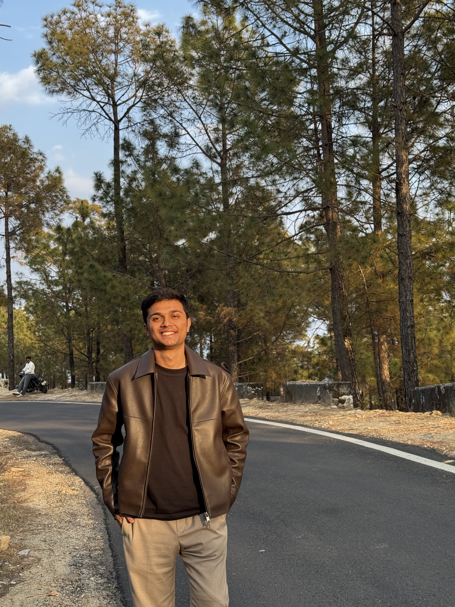

Hi, I'm
I build and deploy end-to-end computer vision pipelines at scale — serving clients across mining, pharmaceuticals, cement, and energy sectors with >95% system uptime.

I'm an ML Engineer at Ripik.Ai with a B.Tech in Computer Science from IIIT Delhi (Class of 2025). I specialize in building production-grade computer vision systems — from model training and fine-tuning to deployment and monitoring at scale.
My work spans YOLOv8/SAM-based detection and segmentation, classical image processing, and model serving via TorchServe. I've deployed ML systems across AWS EC2 and on-premise Windows servers, maintaining robust process monitoring with >95% uptime.
I've had the opportunity to build solutions for major clients including Adani, JSW, JSPL, Sun Pharma, and international companies like CSN Brazil and Cemex Mexico.
Ripik.Ai
NX Block Trades Pvt. Ltd.
CISPA, Germany | TU Dortmund — Dr. Christian Rossow
MIDAS Labs, IIIT Delhi — Prof. Rajiv Ratan Shah
Predicted pasture biomass components (dry total, green, clover, dead matter) from field images using a DINOv2-Large backbone with 2×2 tiled processing, spatial position embeddings, and multi-head attention aggregation. Applied physics-constrained outputs to enforce compositional consistency.
Ranked top 48% (1822/3804 teams)
Predicted stock returns on live data with varying market features and concept drift using metric-based meta-learning (Matching Networks, Prototypical Networks).
Target correlation: 0.0221
Benchmarked Mixtral-8x7b, LLaMA-3.1-8b, and Gemma-9b on SVAMP, GSM8k, and GSM-Hard datasets across multiple prompting strategies (ZeroShot, CoT, ReAct, RAG). Developed a novel multi-agent framework combining specializer and master agents with RAG.
Up to 100% accuracy on SVAMP with CoT
Developed two novel approaches for the ARC challenge: brute-force DFS over DSL function permutations (optimized via DP), and an LLM-guided heuristic search.
LLM-guided approach achieved 2x solve rate vs. brute-force
Indraprastha Institute of Information Technology, Delhi (IIIT-D)
2021 — 2025
I'm always open to discussing new opportunities, interesting projects, or collaborations. Feel free to reach out!